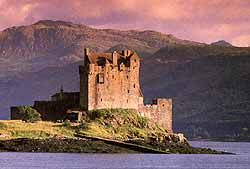
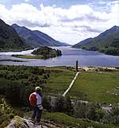
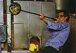
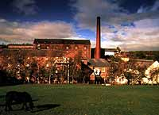
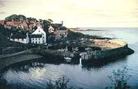
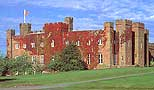

Post Conference Tours
Friday 10th September
Departing Edinburgh, we travel north across the Forth Road Bridge to the
Kingdom of Fife then onwards into scenic Perthshire. Here we visit Scone
Palace, ancient crowning place of Scottish kings and home to the Earls
of Mansfield, before continuing through the Grampian Mountains to a highland
whisky distillery for a guided tour and a  "wee
dram". Heading through the Drumochter Pass and along the banks of Loch
Lagagan, we arrive at the Alexandra hotel, Fort William (or similar) for
dinner and overnight, 2 nights.
Saturday 11th September
This morning we head through the mountains and glens aboard a train on
the famous West Highland Railway as we journey towards the Isle of Skye
- an enchanting island with craggy coasts and breathtaking panoramas. We
board a modern ferry at Mallaig for a 30 minute crossing to Armadale, then
tour the southern part of the island before returning to the mainland via
the Skye bridge, stopping off to visit Eilean Donan Castle en route
to Fort William.
 Sunday
12th September
After breakfast, we take a 15 - minute gondola ride up Aonach Mor from
where we can admire the surrounding landscape with views to the Isle of
Skye. Departing Fort William, we head through infamous, yet majestic Glencoe
before the gentle, romantic shores of Loch Lomond welcome us back
to the Lowlands, arriving in Glasgow at 17h30 and Edinburgh at 18h30.
TOUR INCLUDES:
-
Entrance fees to all visitor attractions as per the itinerary
-
Sightseeing by executive coach
-
Professional guide throughout
-
All ferry, train & bridge fares
-
Tourist class accommodation on a dinner bed and breakfast basis
| Price - |
£210 per person sharing twin/ double accommodation |
|
£245 per person in single accommodation |
|
Accompanying Person's
Tours
Scotland has much to offer and you can be sure of a typically warm Scottish
welcome. We have organised a number of daily excursions for your joyment.
Please mark your interest on the registration form.
Monday 6th September
- THE BORDERS
 To
the world famous Edinburgh Crystal Factory, situated on the outskirts
of Edinburgh for a guided tour and the opportunity to witness first-hand
every aspect of the traditional skills of dedicated craftsmen that give
Edinburgh Crystal its scintillating sparkle and hallmark of quality. Onwards
to the market town of Peebles for lunch then to Traquair House -
the oldest inhabited home in Scotland dating from 12th century
that houses relics from the twenty seven Scottish and English monarchs
who visited. Ale is regularly produced in the 18th century brewhouse
and craft workshops have a variety of intriguing products.
Cost per person - £39.00 (includes coach travel, professional
guide, admission charges and lunch)
Tuesday 7th
September - GLENKINCHIE WHISKY DISTILLERY (Half day)
 Glenkinchie
Distillery is situated at the foot of the Lammermuir Hills, approx.
40 minutes coach journey from Edinburgh. Founded by a Lowland farmer in
1840, the distillery continues to adopt the traditional methods of distillation
- with just a little help from modern technology. Guests are shown around
the museum and distillery, witnessing each aspect of this time-honoured
process. After the tour, guests enjoy a wee dram of the fine single malt
whisky produced.
Cost per person - £15.00 (includes coach travel, admission and
whisky tasting)
Wednesday 8th
September – ST ANDREWS & THE KINGDOM OF FIFE
 Departing
from Edinburgh and travelling north over the River Forth with spectacular
views of the century-old rail bridge, you will pass through the historic
county of Fife through the picturesque fishing villages of Pittenweem,
Anstruther and Crail until you reach St. Andrews, home of golf and Scotland's
oldest university. In St. Andrews there will be a walking tour of the university
buildings, the ruined castle and cathedral as well as the Royal and Ancient
Golf Club. Following lunch you will be transported to Falkland Palace,
hunting home of the Royal Stewart family and a much loved house of Mary,
Queen of Scots.
Cost per person - £38.00 (includes coach travel, professional
guide, admissions to visitor attractions, lunch)
Thursday 9th
September - PERTHSHIRE
Driving over the modern Forth Road Bridge, with spectacular views of the
hundred-year-old rail bridge, we will head for Perth to visit Scone Palace.
Scone, the historic coronation palace of  Scotland's
kings, is now the home of the Earl of Mansfield. Here you can tour this
magnificent house and walk in the extensive grounds. Onwards to Crieff
for lunch followed by a visit to Glenturret Distillery. A guided tour of
the various stages of production is followed with a tasting of the finished
product.
Cost per person - £40.00 (includes coach travel, professional
guide, admissions to attractions and lunch)
Please note that details and prices are correct at the time of going
to press. Should there be insufficient interest, the committee reserve
the right to cancel tours if necessary. The limit of liability is restricted
to a refund of any money paid. |